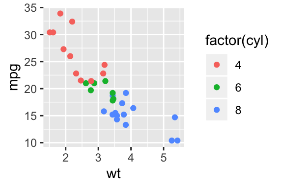
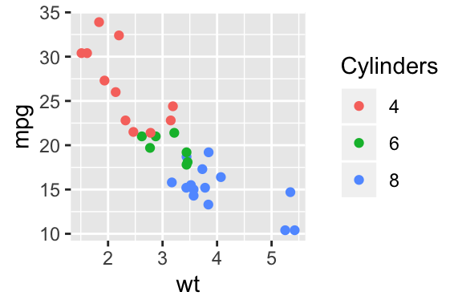
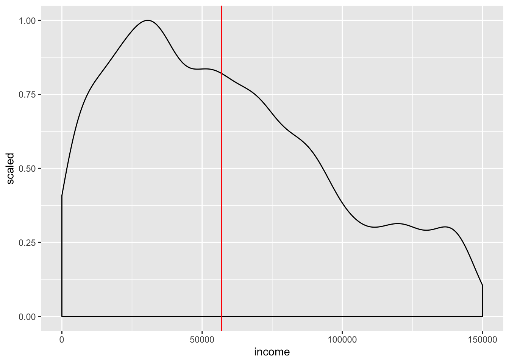

Spit and polish
Ggplot is great because it sets sensible defaults for most things (axes, colours etc). When you are exploring your data these defaults typically suffice. However for publication you will often need to polish up your plots, perhaps including:
- Label your plot axes
- Add lines or text
- Change plot colours etc
- Saving to a pdf or other output format
Labelling axes
By default, ggplot uses variable names and the values in your data to label plots. Sometimes these are abbreviations, or otherwise need changing.
To relabel axes we simply add + xlab("TEXT") or + ylab("TEXT") to an existing plot:
mtcars %>% ggplot(aes(wt, mpg)) +
geom_point() +
xlab("Weight (1000s of lbs)") +
ylab("Fuel economy (miles per gallon)")
Try adding axis labels to one of your existing plots.
Changing the label of color/shape guidelines
If you are short of time you can treat the rest of this section like an extension exercise. It might be useful for your own work, but won’t form part of the assessment.
When adding the colour aesthetic, ggplot uses the variable name to label the plot legend. For example:

The generated legend label sometimes looks ugly (like above) but this is easy to fix:

Explanation: We added labs(color="Cylinders") to the plot to change the legend label.
Try relabelling the colour legend of one of your existing plots.
Adding lines
Sometimes it can be helpful to add lines to a plot: for example to show a clinically meaningful cutoff, or the mean of a sample.
For example, let’s say we want to make a scatter plot of income in the cps2 data, but adding a
line showing the median income. First we calculate the median:
Explanation: First, we are defining a new variable to equal the mean income in the sample. We do
this by using summarise(mean(income)). The part which reads pull(1) says “take the first
column”. We need to do this because summarise() creates a new table, rather than a single value or
sequence of values (which we need below).
cps2 %>%
filter(income < 150000) %>%
ggplot(aes(income, y=..scaled..)) +
geom_density() +
geom_vline(xintercept = median_income, color="red")
Explanation: We have regular density plot. This time we have added geom_vline which draws a
vertical line. The xintercept is the place on the x axis where our line should cross.
Add a geom_vline to a plot you have already created. This could be either:
- A calculated value (e.g.
mean(var)) or - A fixed value (e.g.
xintercept = 20)
Saving plots to a file
So far we have created plots in the RStudio web interface. This is fine when working interactively, but sometimes you will need to send a high-quality plot to someone (perhaps a journal).
The ggsave function lets us do this.
The first step is to make a plot, and save it (give it a name).
Explanation: We used the assignment operator <- to save our plot to a new name
(myfunkyplot). This means that when we run the code RStudio won’t geneate any output immediately,
so we don’t see the plot yet.
Next, we use ggsave to save the plot to a particular file:
You can see the output of the ggsave command by downloading the file here:
myfunkyplot.pdf
Publication-ready plots
Some journals have specific requirements for submitting journals; common ones include submitting in particular formats (e.g. pdf or tiff), using particular fonts etc.
There are also some common types of plots which ggplot almost, but not quite, makes out of the box.
When trying to go the last mile and polish plots for publication several additional packages may be useful. If you have time, you could work through some of the examples on this page
As mentioned in the session, Edward Tufte’s books have been influential in the field of data visualisation. His book ‘The displayt of quantitative information’ (Tufte 2001) is a great resource and guide.
- http://motioninsocial.com/tufte/ shows how to implement many of Tufte’s ideas in ggplot. It would be a nice exercise to work through this, and attempt to plot some of your own data in this style.
References
Tufte, Edward R. 2001. The Visual Display of Quantitative Information. Vol. 2. Graphics press Cheshire, CT.